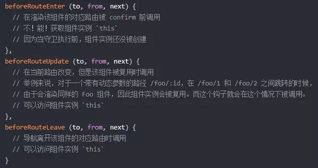
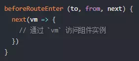
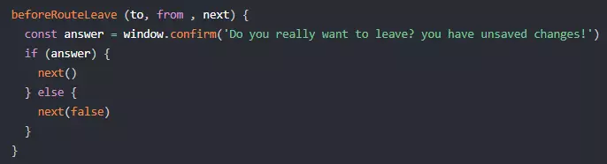

# 路由模式
- hash
- history
# hash
带＃
# history
需要 server 支持
# 动态路由
1 | const User = { |
# 懒加载
1 | import Vue from 'vue' |
# 路由守卫
路由钩子函数有三种：
-
全局钩子： beforeEach、 afterEach
-
单个路由里面的钩子： beforeEnter、 beforeLeave
-
组件路由：beforeRouteEnter、 beforeRouteUpdate、 beforeRouteLeave
# 全局守卫
无论访问哪一个路径，都会触发全局的钩子函数，位置是调用 router 的方法
router.beforeEach () 进入之前触发
router.afterEach () 进入之后触发
# beforeEach（全局前置守卫）
使用 router.beforeEach 注册一个全局前置守卫
1 | const router = new VueRouter({ |
每个守卫方法接收三个参数：
- to: Route: 即将要进入的目标路由对象（to 是一个对象，是将要进入的路由对象，可以用 to.path 调用路由对象中的属性）
- from: Route: 当前导航正要离开的路由
- next: Function: 这是一个必须需要调用的方法，执行效果依赖 next 方法的调用参数。
# next 参数
- next (): 进行管道中的下一个钩子。如果全部钩子执行完了，则导航的状态就是 confirmed (确认的)。
- next (false): 中断当前的导航。如果浏览器的 URL 改变了 (可能是用户手动或者浏览器后退按 钮)，那么 URL 地址会重置到 from 路由对应的地址。
- next (’/’) 或者 next ({ path: ‘/’ }): 跳转到一个不同的地址。当前的导航被中断，然后进行一个新的导航。你可以向 next 传递任意位置对象，且允许设置诸如 replace: true、name: ‘home’ 之类的选项以及任何用在 router-link 的 to prop 或 router.push 中的选项。
- next (error): (2.4.0+) 如果传入 next 的参数是一个 Error 实例，则导航会被终止且该错误会被传递给 router.onError () 注册过的回调。
确保要调用 next 方法，否则钩子就不会被 resolved。
# afterEach（全局后置钩子）
1 | const router = new VueRouter({ |
和守卫不同的是，这些钩子不会接受 next 函数也不会改变导航本身
# 路由独享的守卫 (单个路由独享的)
1 | export default new VueRouter({ |
# 组件级路由钩子
1 | { |

beforeRouteEnter 守卫 不能 访问 this，因为守卫在导航确认前被调用，因此即将登场的新组件还没被创建。不过，你可以通过传一个回调给 next 来访问组件实例。在导航被确认的时候执行回调，并且把组件实例作为回调方法的参数。

注意～： beforeRouteEnter 是支持给 next 传递回调的唯一守卫。对于 beforeRouteUpdate 和 beforeRouteLeave 来说，this 已经可用了，所以不支持传递回调，因为没有必要了。
这个离开守卫 beforeRouteLeave () 通常用来禁止用户在还未保存修改前突然离开。该导航可以通过 next (false) 来取消。

# 完整的导航解析流程：
-
导航被触发。
-
在失活的组件里调用离开守卫。
-
调用全局的 beforeEach 守卫。
-
在重用的组件里调用 beforeRouteUpdate 守卫 (2.2+)。
-
在路由配置里调用 beforeEnter。
-
解析异步路由组件。
-
在被激活的组件里调用 beforeRouteEnter。
-
调用全局的 beforeResolve 守卫 (2.5+)。
-
导航被确认。
-
调用全局的 afterEach 钩子。
-
触发 DOM 更新。
-
用创建好的实例调用 beforeRouteEnter 守卫中传给 next 的回调函数。